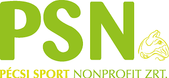
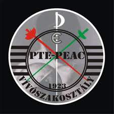
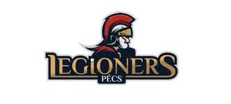

Életem során több sportot is kipróbáltam, illetve többe is belekezdtem, azonban meghatározó sportjaimként hármat tudnék kiemelni, amelyeket magasabb szinten is igyekeztem űzni, ezek közül időrendben az első az úszás volt melyet 6 éves korom óta versenyszerűen csináltam és majdnem 6 éven keresztül űztem, majd rákényszerültem az abbahagyására, hiszen a folytatása a tanulmányaim rovására ment volna.
Ez után kezdtem el vívni a PTE-PEAC vívószakosztályában, ez a sport volt a legmeghatározóbb az életemben és 13 éves koromtól aktívan versenyszerűen űztem országos és nemzetközi eredményekkel helyenként. Ezt a sportot 4 év elteltével felfüggesztettem, mivel a teljesítményemet nem tudtam fenntartani a tanuls és az érettségi közeledtével, így nem okozott egy idő után akkora örömet már Azonban az egyetem mellett szeretném újrakezdeni a BME vívócsapatában, amint lehetőségem adódik rá.
A vívást követően elkezdtem amerikai futballozni félig hobbi szinten a Pécs Legioners csapatában ezt a sportot másfél évig űztem majd sérülés miatt abba hagyni kényszerültem.
